Limbomorphs
1 Department of Brain and Cognitive Sciences, Massachusetts Institute of Technology, Cambridge, MA, USA
2 Allen Discovery Center, Tufts University, Medford, MA, USA
3 Wyss Institute for Biologically Inspired Engineering, Harvard University, Boston, MA, USA
∗ Corresponding author: alexrez@mit.edu


Six evolved Gifbreeder outputs.
Gifbreeder
The space of all possible three-second videos is combinatorially enormous. Most artifacts in this space are visually meaningless, and a random sample almost always returns complete noise. Picbreeder is a collaborative IEC platform in which users guide the evolution of images by repeatedly selecting aesthetically preferred variants from a population generated through CPPN-NEAT [Secretan et al., 2011; Stanley, 2007; Stanley and Miikkulainen, 2004]. This allows for search over vast image space to be far more efficient, often finding recognizable patterns and objects in only a few generations. Similar ideas have been explored in IEC more broadly [Dawkins, 1987; Takagi, 2001], and more recently it has been shown that time-indexed IEC of compositional pattern-producing networks (CPPNs) can extend static images to support the breeding of 2D and 3D animations [Tweraser et al., 2018].
Gifbreeder is a web-based IEC platform inspired by Picbreeder that uses NEAT-based search [Stanley and Miikkulainen, 2002] over CPPN representations to evolve animated GIFs through user-guided selection. The chosen CPPN inputs for each pixel are its coordinates, radial distance from center, time, and a bias constant. The three outputs are interpreted and displayed as HSV channels. Formally, a genome parameterizes a CPPN
where $\theta$ denotes the network topology, activation functions, and connection weights, $x$ and $y$ the pixel coordinates, $d = \sqrt{x^2 + y^2}$, $t$ the time step, and $b$ the bias node. $x$ and $y$ inputs are normalized between $-0.5$ and $0.5$ while $t$ is normalized between $0$ and $1$.
Phenotypes are generated by querying $F_{\theta}$ over a pixel grid and $t = 45$ timesteps, corresponding to 3 seconds at 15 frames per second. Besides the time input, Gifbreeder differs from Picbreeder in its set of activation functions, which were roughly chosen for their apparent ubiquity in nature [Turing, 1952; Murray, 1981; French and Brakefield, 1992; Kondo and Miura, 2010]. Gifbreeder defines a spacetime field rather than a simulated world. This distinction is central to the interpretation of the results below.
Limbomorphs
The emergence of lifelike beings in Gifbreeder was completely unintended and unexpected since it was initially created to be an art tool. At first, Gifbreeder patterns were desolate and abstract. Occasionally and increasingly, expressions began to appear recognizable and organic. After several evolutionary runs, we began to notice expressions that exhibited apparent animacy [Heider and Simmel, 1944]. Once a limbomorph was found, it could be used as a branch-off point to evolve a family of creatures. Using this technique, we quickly generated entire families of limbomorphs with varying degrees of morphological and behavioral complexity (Figure 1).


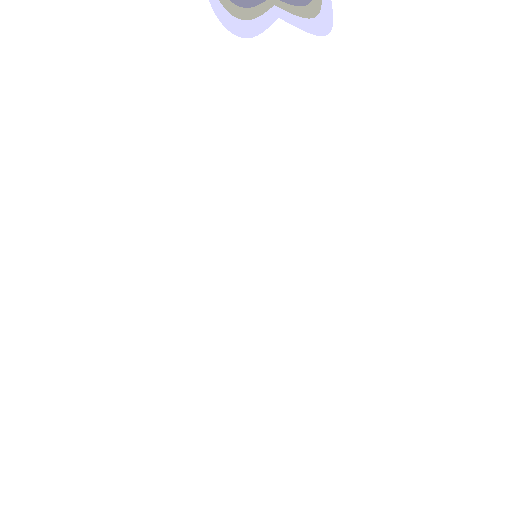
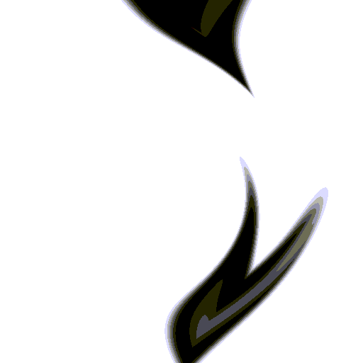
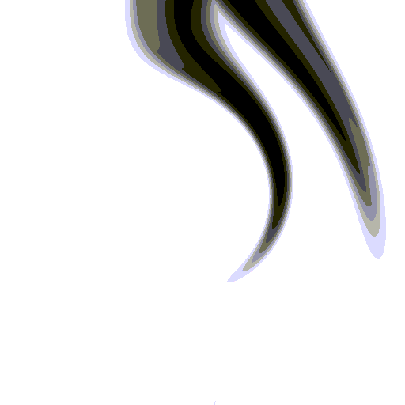
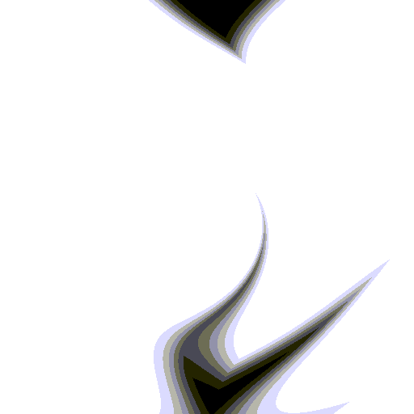
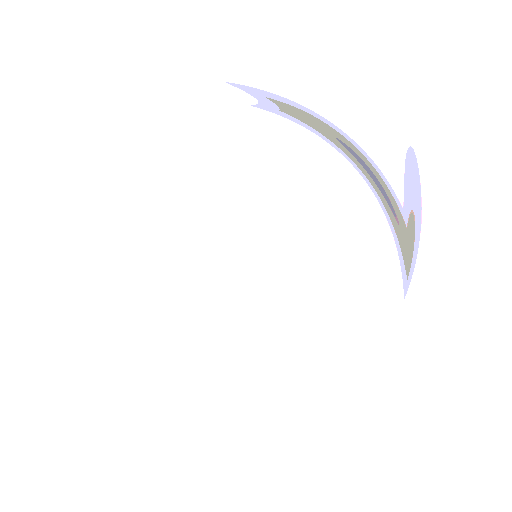

Figure 1.Nine limbomorphs of increasing morphological complexity. They begin as a large undifferentiated mass (4ab) before becoming thinner (4c), developing a forked tail (4d-e), a secondary bifurcation (4f-g), and eventually fine, filamentous (flagella-like) appendages (4h-i). More species can be found in the drawing app.
Reactions to perturbations
Gifbreeder genomes encode the entire GIF and not simply the limbomorph, making it impossible to excise the being from its environment. This makes assessing whether there is any “being” at all particularly challenging. In Lenia [Chan, 2019], for example, creatures have kernels which act as a receptive field that can inform the creature about incoming obstacles [Cool et al., 2026]. Limbomorphs don't have local rules or receptors in analogous ways; however, one way to think about interacting with limbomorphs is to warp the inputs of its CPPNs in a meaningful way. This was the motivation for the drawing tool, which warps how $d$ is calculated (Figure 2). When the user draws walls with the perturbation tool, $d$ is replaced by the geodesic distance from the computed center ridge.
Figure 2. Drawn strokes (black) become walls; each free region's center ridge is computed (red, d = 0) and the geodesic distance from it (shading, contours) becomes the d input to the CPPN. Try drawing a maze, a point obstacle, or a spiral to see how the field reorganizes.
Perturbations were applied to existing expressions using this drawing tool resulting in species-specific behavioral reactions (Figure 3). One limbomorph species, “Fish”, is extremely avoidant of the perturbations (Figure 3, top row). This mirrors the “agnosiophobia” behavioral response recently discovered in Lenia, characterized by avoidance of regions of space where no sensory information is available. Another species, “Caterpillar”, navigates away from the perturbation in the upper regions but towards the perturbation in lower regions (Figure 3, middle row). Lastly, creating a “point obstacle” in the bottom right causes the “Jellyfish” species, which normally maintains its topology near the center of the space, to stretch and envelop the perturbation. Astonishingly, when a small maze is drawn, Jellyfish orients its body around the maze (Figure 3, bottom row).
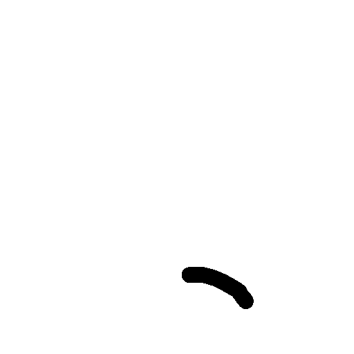
b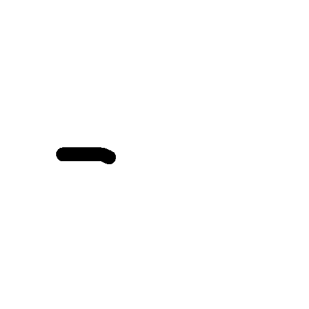
c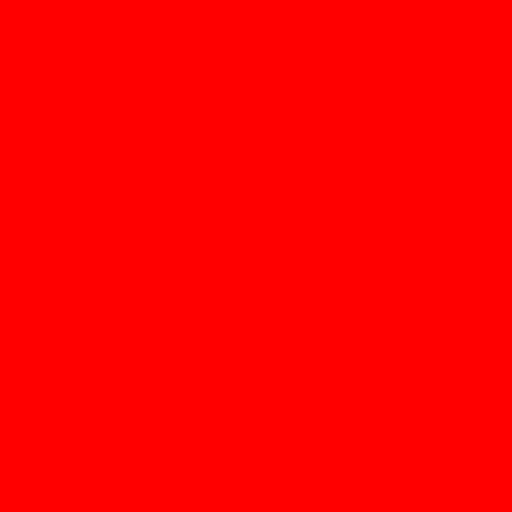
d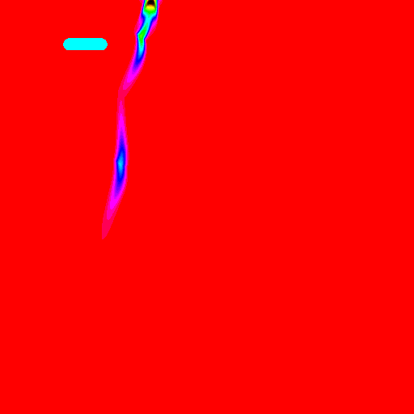
e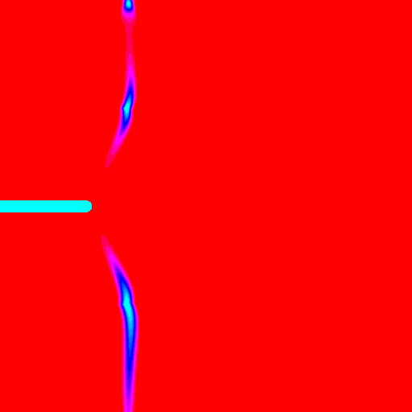
f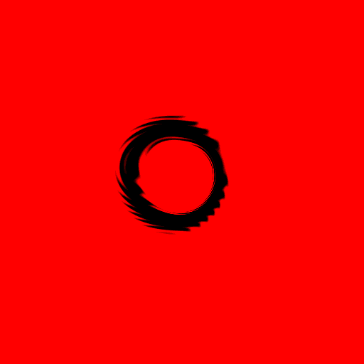
g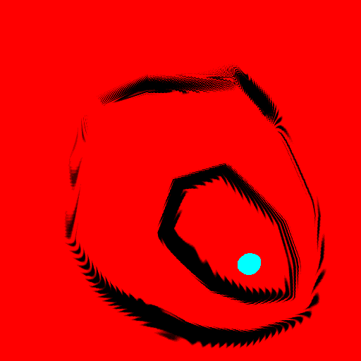
h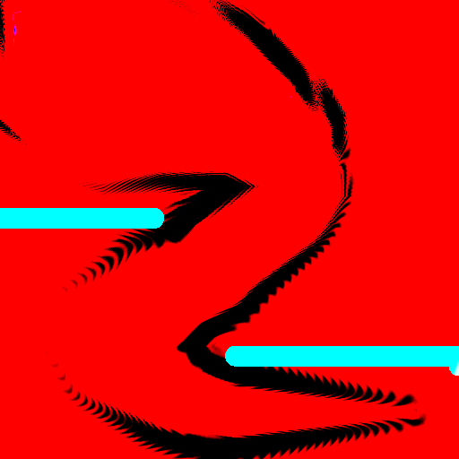
iFigure 3. Each limbomorph's motion is affected differently depending on the species and the point of perturbation. Fish avoids the walls, Caterpillar reverses its response depending on the drawing location, and Jellyfish reshapes itself to envelop a point obstacle (h) or wrap around a maze (i).
Conclusion and discussion
We present Gifbreeder and its drawing tool as a new medium for studying artificial life. Species-specific reactions to input-space perturbations—like Jellyfish maintaining its topology while repositioning around the maze—suggest that behaviors suggestive of spatial competence and goal-directedness [Levin, 2019; Heylighen, 2023] can arise in a system with no explicit representation of agent, environment, or interaction rules. Could limbomorphs provide a useful model system for investigating how basal cognition can emerge from field dynamics alone? Further analysis is needed to determine the mechanisms underlying these behaviors.
Acknowledgements
We would like to thank Ken Stanley and Yoonsuck Choe for the helpful feedback and encouragement to pursue this idea.
References
Chan, B. W.-C. (2019). Lenia: Biology of artificial life. Complex Systems, 28(3):251–286.
Cool, J., Hartl, B., Levin, M., and Petti, S. (2026). Agnosiophobia in a virtual agent: Behavioral and dynamical architecture in Lenia. arXiv preprint arXiv:2605.30708.
Dawkins, R. (1987). The Blind Watchmaker. W. W. Norton & Company, New York, NY.
French, V. and Brakefield, P. M. (1992). The development of eyespot patterns on butterfly wings. Development, 116(1):103–109.
Heider, F. and Simmel, M. (1944). An experimental study of apparent behavior. The American Journal of Psychology, 57(2):243–259.
Heylighen, F. (2023). The meaning and origin of goal-directedness: A dynamical systems perspective. Biological Journal of the Linnean Society, 139(4):370–387.
Kondo, S. and Miura, T. (2010). Reaction-diffusion model as a framework for understanding biological pattern formation. Science, 329(5999):1616–1620.
Levin, M. (2019). The computational boundary of a “self”: Developmental bioelectricity drives multicellularity and scale-free cognition. Frontiers in Psychology, 10:2688.
Murray, J. D. (1981). A pre-pattern formation mechanism for animal coat markings. Journal of Theoretical Biology, 88(1):161–199.
Secretan, J., Beato, N., D'Ambrosio, D. B., Rodriguez, A., Campbell, A., Folsom-Kovarik, J. T., and Stanley, K. O. (2011). Picbreeder: A case study in collaborative evolutionary exploration of design space. Evolutionary Computation, 19(3):373–403.
Stanley, K. O. (2007). Compositional pattern producing networks: A novel abstraction of development. Genetic Programming and Evolvable Machines, 8(2):131–162.
Stanley, K. O. and Miikkulainen, R. (2002). Evolving neural networks through augmenting topologies. Evolutionary Computation, 10(2):99–127.
Stanley, K. O. and Miikkulainen, R. (2004). Competitive coevolution through evolutionary complexification. Journal of Artificial Intelligence Research, 21:63–100.
Takagi, H. (2001). Interactive evolutionary computation: Fusion of the capabilities of EC optimization and human evaluation. Proceedings of the IEEE, 89(9):1275–1296.
Turing, A. M. (1952). The chemical basis of morphogenesis. Philosophical Transactions of the Royal Society B: Biological Sciences, 237(641):37–72.
Tweraser, I., Gillespie, L. E., and Schrum, J. (2018). Querying across time to interactively evolve animations. In Proceedings of the Genetic and Evolutionary Computation Conference (GECCO '18), New York, NY, USA. ACM.